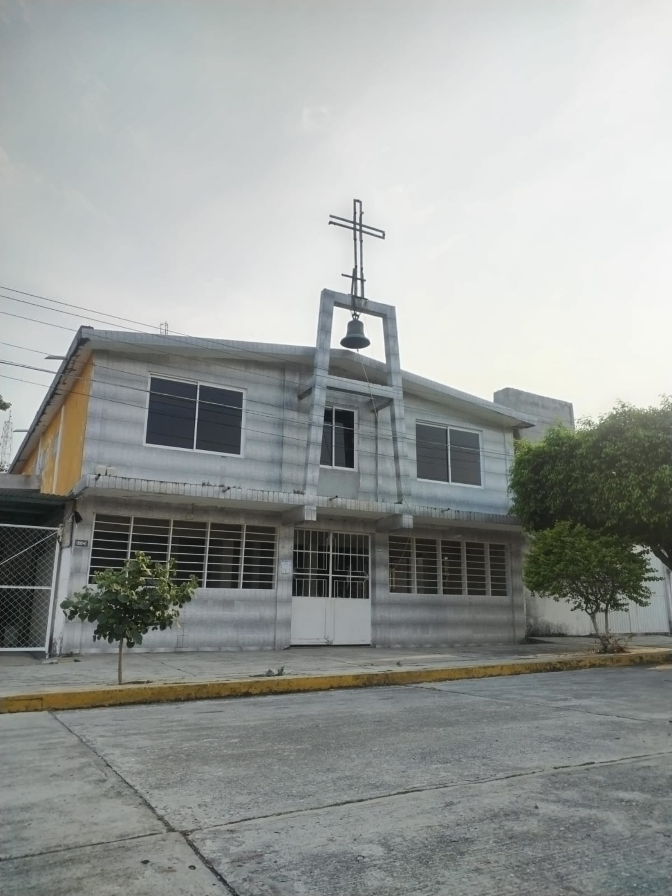

La economia de esta localidad se basa en los empleos, los comercios y las oportunidades dentro de la localidad. Asi como la gran variedad de comercios, aunque no son empresas muy grandes, son comercios que pagan bien. Dentro de este pueblo se encuentran:


